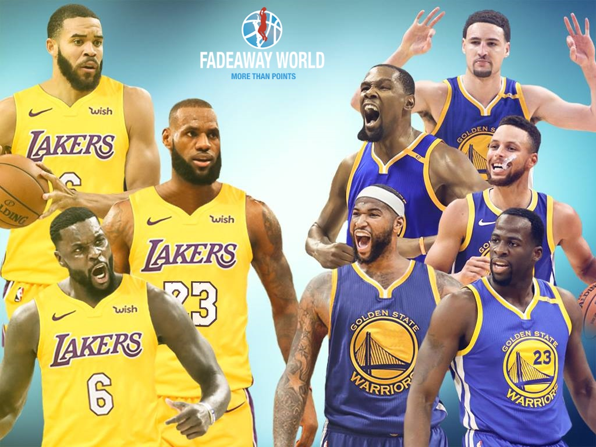

I have been watching this team play for a few years now, and this trade made my finals predictions alter. LeBron is not my favorite player in the league, however he is my favorite all-star. My favorite player in the league is Brandon Ingram, who was drafted to the Lakers two seasons ago.This year, Ingram will be learning from the best, and by the time Lebron is ready to retire in a few years, he will have insight on becoming the greatest player of the next generation of drafts.
There were many other changes made with players and teams this off-season. Leaving the predictions for the year widely spread out. Due to the number of all-stars playing on different teams in the same conference as Lebron, the chances of any type of blowout is unlikely.